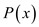
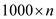
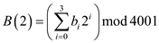
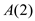

Consider the provided value of p and q for text.
 And
And
The number of digits in p is 2 therefore window size m becomes 2.
Assume x is the remainder.

• A spurious hit will occur when p has a value, such that the value of is 4.
• A proper match will occur when remainder is 4 and p is 26.
Now, each time extract two digits from the text T, and match as follows.
|
Different (p) |
Remainder (p mod q) |
Status |
|
|
p1 |
31(first two digits of T) |
9 |
No Hit |
|
p2 |
14(2nd and 3rd digits of T) |
3 |
No Hit |
|
p3 |
41 |
8 |
No Hit |
|
p4 |
15 |
4 |
Spurious Hit |
|
p5 |
59 |
4 |
Spurious Hit |
|
p6 |
92 |
4 |
Spurious Hit |
|
p7 |
26 |
4 |
Proper Match |
|
p8 |
65 |
10 |
No Hit |
|
p9 |
53 |
9 |
No Hit |
|
p10 |
35 |
2 |
No Hit |
|
p11 |
58 |
3 |
No Hit |
|
p12 |
89 |
1 |
No Hit |
|
p13 |
97 |
9 |
No Hit |
|
p14 |
79 |
2 |
No Hit |
|
p15 |
93 |
5 |
No Hit |
Observe the above table, the remainder is 4 is obtained, when p is 15, 59, 92, and 26. When the value of p is 26, the match is a proper match, but not a Spurious Hit.
Therefore, the numbers of Spurious Hits are 3 .
A RABIN-KARP-MATCHER method is used to determine the P pattern in text string T. Make following modification in Rabin-Karp method to determine any one pattern among K patterns:
Suppose P is a 2-D array which contains K patterns. Each pattern of P is m characters long.
FIXED-RABIN-KARP-MATCHER (T, P, d, q, K)
//determine the length of first pattern of P. The length of all pattern in P are same.
1
2
//loop used to check all pattern in P till one pattern is not found
3 for to

4
5
6
//use for loop to determine the hash value of jth pattern and text strings T.
7 for  to
to

8
9
//use for loop to traverse the whole text strings T.
10 for  to
to
//compare the hash value.
11 if
//check whole pattern matches
12 if
13 print “jth pattern occur with shift” s
//control moves to the calling function after finding one
// pattern of P in text string T
14 return
//recalculate the hash value
15 if
16
Modification for fixed pattern:
• All K pattern has same length, so determine the first pattern length.
• Use one more for loop in line 3 to traverse all K pattern till one pattern is not found in text string T.
• Make modification in 8th and 12th line to replace and with and.
• Add return statement in 14th line to return the control when one pattern is found.
Modification required for variable patterns:
Only small modification in FIXED-RABIN-KARP-MATCHER is required for variable K patterns. For variable K patterns put 1st line code inside the first for loop. The first 4 line after modification in FIXED-RABIN-KARP-MATCHER are as follow:
VARIABLE-RABIN-KARP-MATCHER (T, P, d, q, K)
//determine the length of text string T.
1.
//loop used to check all pattern in P till one pattern is not found
2. for to
//determine the length of jth pattern.
3.
4.
Rest all code from line 5 to 16 will be same as above FIXED-RABIN-KARP-MATCHER algorithm.
Make following modification to determine  ‘P’
pattern in
‘P’
pattern in  ‘T’
character array.
‘T’
character array.
• One of the best methods is to get first row from pattern P and check that pattern in first row of character array T.
• If pattern is found then fetched second pattern from P again find that pattern from first row of character array T.
• When pattern is not found in first row of character array T then find that pattern in second row of character array T and so on. If pattern is not found in any row of T array then return text NOT FOUND.
Consider the following CHECK algorithm to determine ‘P’
pattern in ‘T’
character array.
CHECK
//use nested for loop to check each row of P and T.
1 for to
m
2 for to n
//call function to check particular ith row exist in jth row of T
3 if RABINKARP != NOT FOUND
4 break
//use if statement to check particular ith row does not exist in T.
5 if
6 break
7 return NOT FOUND
//function to check pattern exist in text or not
RABINKARP
//calculate the hash value
1 
2
//use loop to check the pattern in t
3 for  to
to
//compare the hash value
4 if
5 if
6 return k
7
8 return NOT FOUND
Time complexity:
• In above CHECK algorithm a nested for loop is used to
check ‘P’
pattern in
‘T’.
• In each iteration of nested for loop a RABINKARP function is called which also uses one for loop.
Hence, the total time complexity of CHECK algorithm to determine
‘P’ pattern in ‘T’
character array is .
.
ALICE AND BOB
Alice and Bob are the two names of person who communicates with each other. In computer language, it is easy for them to communicate, it is because their desired conditions are represented by 1 are non-desired conditions are represented by 0. After this, an algorithm is used that tests the conditions and returns whether there exists condition when desired conditions of both are matched or not.
Most commonly used method is matrix method, where all the conditions are shown and at desired positions 1 will be there. Suppose the bit transferred by Alice is represented by ‘red’ and bits of Bob is represented by ‘blue’, the corresponding matrix can be shown as:
Matrix
In the given problem, Alice has a copy of n-bit file and in the same way, the Bob has an n-bit file as. Both Alice and Bob wants to check whether the files that both have are identical or not. And in the process of file transmission they use the concept of probability for the file checking.
In order to check whether both files are same, Alice can send the whole file to Bob and the Bob checks both files and return ‘Yes’ if both files are same otherwise ‘No’. This method is very costly and time taking. One another method for checking whether both files are same is given below:
A prime q is selected in the process in such a way that an integer x which is obtained from the set. The value of q is selected in such a manner that
Suppose that the bits that Alice have are represented by A and bits that Bob has are represented by B. Here, the functions are used for fits are their corresponding functions are represented by and. Using this condition, the function is evaluated by Alice which is as below:
 . The same
procedure is followed by the bob in which the function is
evaluated. The function is given below:
. The same
procedure is followed by the bob in which the function is
evaluated. The function is given below: .
.As it is known that a belongs to Zq provides a zero of given polynomial and if, then the polynomial has maximum of n distinct zeros. To prove the required condition as stated in the problem, it is checked that both Alice and Bob sends and respectively.
So, if, and since
then , then it
can be concluded that and thus,
the integer would take
more than n-bits to send. Hence, and
are evaluated.
, then it
can be concluded that and thus,
the integer would take
more than n-bits to send. Hence, and
are evaluated.
Here, the value of q is taken greater than  and the value of x is chosen between 0 to. So, if the value of both the evaluations does not match, then there will be one case when the value can be the same.
Consider an example in which the length of bits is 4 bit: Consider that Alice has a file in which bits are {1, 0, 0, 1} and Bob has a file containing bits {0, 1, 0, 1}. So, the value of n is 4. Now, a value of q is selected in such a manner that it should satisfy the condition and also a prime. This means that a prime number is selected having prime value greater than 4000. The prime values greater than 4000 are 4001, 4003, 4007 and so on.
After selecting the value of q as 4001, the value of x should be selected. The value of x lies between 0 to, any value which lies from 0 to 4001 can be taken into consideration. Select the value of x as 2.
Now, the functions and are calculated. This can be given as:
After expansion, the equation can also be written as:
Now, insert the value of a0 to a3, the equation given above becomes:
As, the a0 and a3 has values 1, so their corresponding values can be written as:
Similarly, the value of can be calculated as:

After expansion, the equation of can also be written as:
Now, on putting the values of b0 to b3, the above equation becomes:
As, the b1 and b3 has values 1, so their corresponding values can be written as:
As, the value of functions  and are different, this states that the bits are different.
Here, the number of roots of the polynomial are checked over the
field and by using the condition that if  is a prime
such that is the
polynomial of degree t in which is obtained
from. So as
is
zero, if then if
a is zero of
is a prime
such that is the
polynomial of degree t in which is obtained
from. So as
is
zero, if then if
a is zero of  then
for a polynomial of
degree. Hence, if
p is a prime, then polynomial of degree
t can have at most t distinct zeros modulo p.
The probability can be found by using the equation given below:
then
for a polynomial of
degree. Hence, if
p is a prime, then polynomial of degree
t can have at most t distinct zeros modulo p.
The probability can be found by using the equation given below:
So, the probability will be:
This means that if the value of, and then
there will be one chance among 1000 chances that. It is
clear from the values of functions and
that if their values are same then the value of A will be
equal to B.